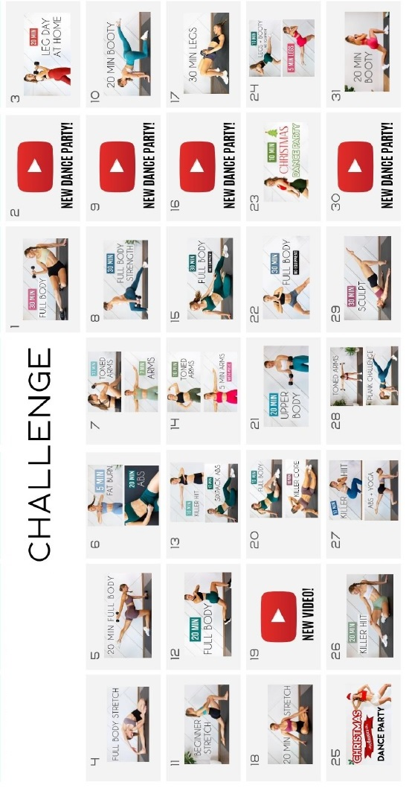

Back to Home


Today is : Day
Day 01
30 min FULL BODY SCULPT At Home (NO JUMPING, Warm up & Cool Down Included)
Day 02
ONE DIRECTION 15 MIN DANCE PARTY WORKOUT (part 2) - Full Body/No Equipment
Day 03
20 MIN LEG/BUTT/THIGH WORKOUT - Lower Body Strength
Day 04
25 min FULL BODY STRETCH (No Talking - for Relaxation, Flexibility & Stress Relief)
Day 05
20 MIN FULL BODY SCULPT (Light Dumbbells, At Home Workout)
Day 06
1.
5 MIN FULL BODY - A quick & intense total body burn
2.
20 MIN TOTAL CORE/AB WORKOUT (At Home No Equipment)
Day 07
1.
10 min TONED ARMS Workout (At Home Quick Burn)
2.
7 MIN TONED ARMS WORKOUT (No Equipment)
Day 08
30 MIN FULL BODY TONING & STRENGTH - Total Body Workout At Home
Day 09
12 MIN KPOP DANCE WORKOUT - BTS, BLACKPINK, MAMAMOO (방탄소년단, 블랙핑크, 마마무)
Day 10
THE BEST AT HOME BOOTY WORKOUT (No Equipment, 20 mins)
Day 11
20 MIN BEGINNER FLEXIBILITY ROUTINE (Stretches for the Inflexible)
Day 12
20 MIN FULL BODY WORKOUT - Apartment & Small Space Friendly (No Equipment, No Jumping)
Day 13
1.
10 MIN KILLER HIIT Full Body Workout (No Equipment, No Repeats)
2.
10 MIN INTENSE ABS - No Equipment
Day 14
1.
TONE YOUR ARMS WORKOUT (10 mins, No Equipment)
2.
5 MIN TONED ARMS WORKOUT - with music & beeps (Dancer Arms No Equipment)
Day 15
30 MIN LOW IMPACT FULL BODY - No Repeats, No Jumping, No Equipment (Warm Up & Cool Down Included)
Day 16
15 MIN TAYLOR SWIFT DANCE PARTY WORKOUT - Full Body Dance Cardio
Day 17
30 MIN BOOTY /LEG WORKOUT (dumbbell, at home)
Day 18
20 MIN FULL BODY STRETCH - for Stress Relief & Flexibility (Minimal Talking)
Day 19
30 MIN FULL BODY STRENGTH - Workout with Weights (Build Strength At Home)
Day 20
1.
10 MIN FULL BODY SWEAT SESH (no jumping, no equipment)
2.
10 MIN INTENSE ABS (No Equipment) - Total Killer Core
Day 21
Full UPPER BODY Workout (Tone & Sculpt) - 20 min At Home
Day 22
30 MIN FULL BODY HIIT (No Jumping + No Equipment)
Day 23
10 MIN CHRISTMAS DANCE WORKOUT - Feel Good Sweat Session!
Day 24
20 MIN KILLER HIIT Full Body Workout (No Equipment, No Repeat, Cardio At Home)
Day 25
10 MIN CHRISTMAS DANCE WORKOUT - Feel Good Sweat Session!
Day 26
10 MIN KILLER HIIT Full Body Workout (No Equipment, Basic Exercises, Cardio At Home)
Day 27
1.
10 MIN ABS + YOGA - Slow and Controlled Core Workout (No Equipment)
2.
10 MIN KILLER HIIT Full Body Workout (No Equipment, Basic Exercises, Cardio At Home)
Day 28
1.
10 MIN TONED ARMS WORKOUT (At Home Minimal Equipment)
2.
6 MIN PLANK CHALLENGE - A Core and Arm Workout!
Day 29
30 MIN FULL BODY DANCER SCULPT (No Equipment, Toning, & Lengthening Workout)">
Day 30
15 MIN TIKTOK HITS DANCE WORKOUT - Full Body/No Equipment"
Day 31
20 MIN BOOTY / LEG WORKOUT - weights & booty band (grow your booty)